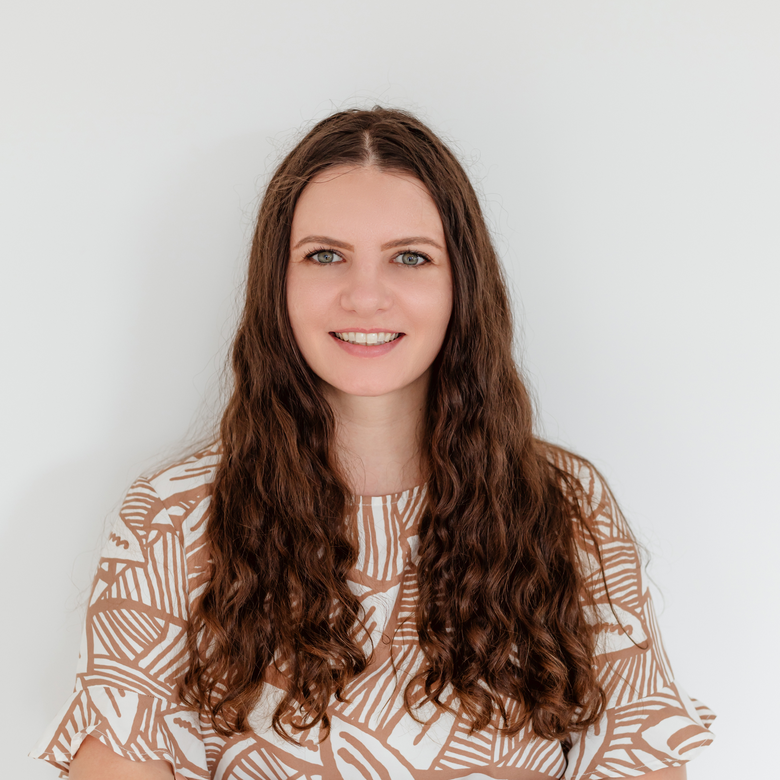

Produktdesigner · Tønsberg, Norge
Produktdesigner for komplekse digitale produkter.
Jeg starter med å forstå problemet: arbeidsflytene, rammene og hva systemet faktisk må løse. Deretter designer og bygger jeg løsningen som gjør det enklere å bruke og videreutvikle.
Basert i Tønsberg, Norge
Utvalgte prosjekter
Case-studier
Hvert prosjekt under er en dokumentasjon av beslutninger og avveininger, hva som ble endret, og hvorfor.

Case-studie · Industrielt HMI / driftsprogramvare
NJORD: Ombygging av et SCADA-system for kontrollrom
En ombygging av den SCADA-baserte konsollen operatører bruker til å drifte et landbasert oppdrettsanlegg: full systemoversikt, alarmgransking, informasjonsarkitektur, et token-drevet designsystem, og de reelle industrielle rammene som formet hver beslutning.
Les case-studien

Ny support-løsning for Laerdal Medical
En selvbetjent supportopplevelse bygget for å redusere behovet for telefonhenvendelser til kundestøtte, fra informasjonsarkitektur til en veiledet feilsøkingsflyt.

Crypho: ombygging av sikker meldingstjeneste
Ombygging og videreutvikling av et ende-til-ende-kryptert meldingsverktøy brukt av sikkerhets- og helseaktører, på tvers av web, desktop og mobil.

Plant-O-Meter
Brukervennlighetsarbeid på følgeappen til en presisjonslandbruksenhet, med forenklet navigasjon og tydeligere tolkning av plantehelsedata for bønder.
Utvalgt erfaring
Annet produktarbeid
NJORD er det ferskeste produktet. Dette er noen av de andre produktene jeg har jobbet med.
Crypho, sikker kommunikasjon for web og mobil SimNext, et treningsøkosystem som spenner over grensesnitt for instruktør, deltaker og simulert pasient Plant-O-Meter, et landbruksprodukt Laerdal Digital Ecosystem, sammenkoblede produkter på tvers av Support, Connect, KnowledgeHub og Account CareClip (Motech / Tunstall), langsiktig produktdesign og vedlikehold gjennom fem produktversjoner Moocall, produktmoduler BitGear, merkevareretningslinjer, vedlikehold av nettside og grafisk design LLEAP, moduler for Mama Anne Pilot Training App DBMS-tabell på en intern nettside for Telenor Štampa Knežević, nettside SkillTrainer (konsept) Delivery app (konsept) Fishing Buddy (konsept) Football Reporter (konsept)
Slik jobber jeg
Rammeverk for kompetanse
Ramme inn problemet, undersøk det, design opplevelsen, systematiser den, og få det bygget.
Produkt
Problemforståelse · Produktstrategi · Informasjonsarkitektur
Research / Erfaring
Brukerinnsikt · UX-strategi · Interaksjonsdesign · Prototyping
Grensesnitt
UI-design · Designsystemer · Datatunge grensesnitt · Universell utforming
Leveranse
Design-til-utvikling · Dokumentasjon · Samarbeid med frontend
Verktøy
Figma · HTML/CSS · Git · React / prototyping · AI-assisterte arbeidsflyter
AI hører hjemme i den siste kolonnen, ikke i overskriften. Det gjør utforsking, dokumentasjon og prototyping raskere.

Om meg
Jeg designer digitale produkter der kompleksitet betyr noe.
Mastergrad i grafisk design og teknologi, 10+ år innen UI, UX og produktdesign, og en bakgrunn fra frontend som gjør at jeg forstår hva et design faktisk koster å bygge.
Jeg jobber fra problemforståelse til UI og designsystemene som holder et produkt sammen, og jeg holder meg tett på utviklingsmiljøet slik at beslutningene overlever møtet med faktisk kode. Den kombinasjonen er mest verdt på produkter som er datatunge, teknisk begrensede, eller som rett og slett har blitt kompliserte over tid: industriell programvare (se NJORD case-studien), B2B-plattformer, verktøy med reelle krav til regelverk eller sikkerhet.
Brukerinnsikt og funn fra brukertester blir til produktbeslutninger, ikke bare en presentasjon med observasjoner. Og fordi jeg har jobbet på begge sider av overleveringen, er et designsystem jeg gir videre til utviklerne noe de kan bygge direkte fra, ikke statiske rammer de må tolke på nytt.
Hva kollegaer sier
Kontakt
Har du et komplekst produkt som må ryddes opp i?
Jeg har jobbet med industriell programvare, helseteknologi og kryptert kommunikasjon, ofte med kunder og team under taushetserklæring. Ta gjerne kontakt for å høre mer om hva jeg har gjort, og hvordan det kan være relevant for ditt produkt.
Tønsberg, Norge. Også åpen for muligheter i Sandefjord, Oslo og remote.